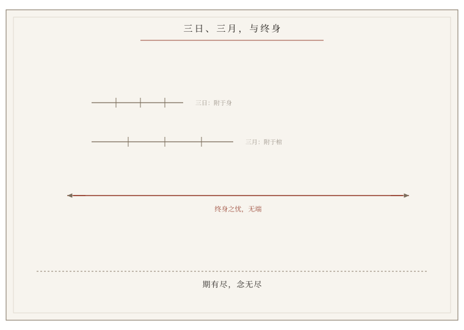

檀弓上 · 三·九 · 第 212 课
子思曰：丧三日而殡，凡附于身者，必诚必信，勿之有悔；三月而葬，凡附于棺者，必诚必信，勿之有悔；丧三年以为极亡，则弗之忘矣。故君子有终身之忧，而无一朝之患，故忌日不乐。注「言其日月，欲以尽心修备之」「极，已也」「毁不灭性」。
说什么事：两个期限，一条没有期限的念。
落在哪一层：礼，兼及礼制与礼意。论送终之备与终身之忧。
为何编在此位：上节论哀之节，此节论哀之度：三日、三月有其限，终身之忧无其限，而一朝之患不可有。
【经】子思曰：「喪三日而殯，凡附於身者，必誠必信，勿之有悔焉耳矣。三月而葬，凡附於棺者，必誠必信，勿之有悔焉耳矣。喪三年以為極亡，則弗之忘矣。故君子有終身之憂，而無一朝之患，故忌日不樂。」
【注】言其日月，欲以盡心脩備之。附於身，謂衣衾；附於棺，謂明器之屬。極，已也；去已久遠，而除其喪。則之言曾。念其親。毀不滅性。謂死日，言忌日不用舉吉事。
【疏】此一节论丧之初死及葬送终之具，须尽孝子之情，及思念父母不忘之事。「三日而殡」者，据大夫士礼，故云三日也。「凡附于身」谓衣衾也；夫祀必求仁者之粟，故送终之物悉用诚信，必令合礼，不使少有非法，后追悔咎；「焉耳矣」者，助句之辞。「三月而葬」亦大夫士礼也。附谓明器之属，亦当必诚信不追悔也。注「言其至之属」：郑意但言凡附身附棺自足，又更云「三日」「三月」，言棺中物少者，三日之期，家计可使量度则必中；棺外物多，三月之赊，思忖必就，故言日月，欲见宜慎也。云「谓明器之属」者，案《既夕礼》除明器之外，有用器弓矢、耒耜、两敦、两杅、盘匜、燕乐器、甲、胄、干、笮、杖、笠、翣等。「丧三年以为极亡」，此亦子思语辞也，言服亲之丧以经三年，以为极亡可以弃忘，而孝子有终身之痛，曾不暂忘于心也。注云「则之言曾」，故君子有终竟己身恒惨念亲。虽终身念亲，而不得有一朝之间有灭性祸患，恐其常毁，故唯忌日不为乐事，他日则可，防其灭性故也。所以不灭性者，父母生己，欲其存宁，若灭性，伤亲之志，又身已绝灭，无可祭祀故也。
殡 敛而停柩于堂，待葬。
附于身 注「谓衣衾」。贴身之物。
附于棺 注「谓明器之属」。入棺及随葬之物。
诚 信 诚谓心不欺，信谓物不伪。送终之物须真须实。
极亡 极，已也。服丧至三年，礼制已尽。王肃本作「极忘」，句读异。
一朝之患 一朝之祸，指因哀毁而灭性。
忌日 注「谓死日」。亲亡之日。
子思说：丧三日而殡，凡贴身之物，必诚必信，不要让自己日后追悔。三月而葬，凡入棺随葬之物，必诚必信，不要让自己日后追悔。丧至三年，礼制已极，而心不曾一刻忘。所以君子有终身之忧，却没有一朝因哀毁而伤性之患；所以忌日不作乐。
此节以两个限期起，以无期收。三日、三月，都是「来得及」的期限：棺中之物少，三日足以量度；棺外之物多，三月足以思忖。设期限不是催人，是给人一段够用的时间把事做对，免得日后追悔。至「三年以为极亡」，礼制到此为止；而「则弗之忘矣」一句翻上去：制可尽，念不尽。故末以「终身之忧」与「一朝之患」对举，再收一句「忌日不乐」——礼给哀伤留了一个出口。
第一层 期限是为了「无悔」 三日、三月的意义，注说得极明白：「欲以尽心修备之」。不是限期完工，是限期把该备的备足。疏更点出「夫祀必求仁者之粟，故送终之物悉用诚信」——所用之物须是干净得来的，然后才谈得上诚与信。此一层把丧礼拉回到最实的地方：东西是真是假，日后自己知道。
第二层 诚与信 诚者心，信者物。二者并举，见古人不以心之诚贷物之伪。心再诚，物不实，仍是悔。故「必诚必信」四字，是丧礼的验收标准。
第三层 极亡而不忘 「丧三年以为极亡」，郑注「极，已也」；「则之言曾」，则此句读作「曾不之忘」。礼有尽期，情无尽期。这两句并读，才见古人立礼的分寸：给制度一个终点，同时承认心不肯到那个终点。
第四层 终身之忧与一朝之患 注「毁不灭性」。忧可以终身，患不可一朝：终日哀念而不至毁身。疏说其故有三：父母生己，本欲其存宁；灭性则伤亲之志；身既灭绝，则无人祭祀。三条都落在「亲」上，不是落在「己」上。故忌日不乐，只是不举吉事，他日仍可如常——防其灭性而已。
与今日何干 办一件事，最怕的不是做不好，是日后想起来悔。此节给的是一条实务：留出够用的时间，用真东西，做对每一步。而后半节更重：哀伤可以长，但不能毁人。
| 左 | 右 |
|---|---|
| 三日而殡 | 棺中物少，三日可量度 |
| 附于身者必诚必信 | 衣衾须真须实 |
| 三月而葬 | 棺外物多，三月可思忖 |
| 附于棺者必诚必信 | 明器之属，勿使有悔 |
| 三年以为极亡 | 礼制已尽 |
| 则弗之忘矣 | 制可尽，念不尽 |
| 终身之忧 | 念其亲，终竟己身 |
| 无一朝之患 | 毁不灭性 |
| 忌日不乐 | 唯不举吉事，防其灭性 |
画一幅三段并置的静物，自左至右留出两处空白。左段：一张矮榻，榻上整齐叠放一袭衣衾，衣角压得平正，榻边放一只小箱（箱盖合严）。中段：一口未盖的棺，棺内可见数件小器物（弓形、盘形、小敦形各一），棺旁一只空篮。右段：一张空案，案上只置一盏未点的灯与一枚素简，灯芯干净。三段的地面同一高度，光自上方平照，无阴影交错。不画人、不写文字。赭色只用在右段那盏灯的灯盏边缘。
